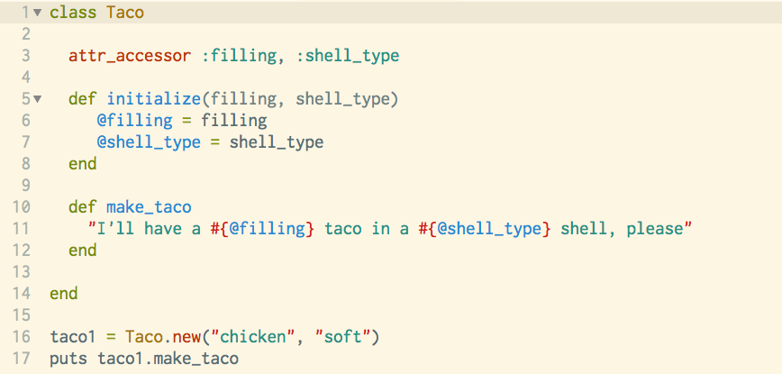

We Always Need More Tacos!!
A study of Ruby Classes
Note: This blog post is in honor of the exciting new taco emoji!
Objects are the organizing elements in Object-Oriented Programming, and in Ruby Programming, we use Classes to organize Objects. Classes give you, the programmer, the power to group behaviors into clusters, so that you can quickly create multiple new objects of a class that have the same behaviors and attributes.
Since we always need more tacos, let's use that as an example! In this case, I have created a class called Taco, and assigned it two attributes: the filling and the type of shell. To simplify the code, I used the attr_accessor method on the attributes to give them reader and writer capabilities. There may be a time that we want to access the instance variables in this class, and the attr_accessor method allows us to do so. I then initialize the attributes with the initialize method, assigning them variables with the same name as the attribute and an @ sign as the start of a variable name. This indicates that these are instance variable, i.e. they are only accessible in the Taco class. The next step is to create methods that can be called on any instance of the Taco class. In this case, I create the make_taco method, with a statement of the order to be processed.Once the class is created, we can make as many tacos as we want! By creating a new variable called taco1 and assigning it a new instance of the Taco class, we can call the method within the Taco class on the new instance. We can create as many of these as we want, with various inputs for the type of filler and shell. Tacos for all!
